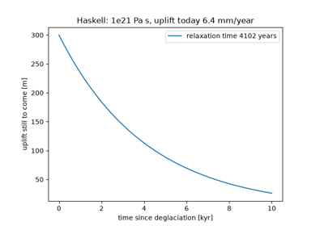
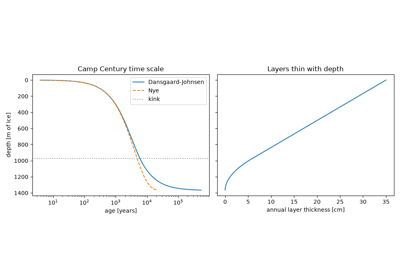
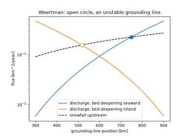

Breakthroughs in Glaciology#
Glaciology began with the recognition that ice once covered much of Europe
and that glaciers flow. The nineteenth century added the sinking of the land
under the ice and the physics of freezing seas. The twentieth century made
ice a material: Haskell measured the mantle by its rebound, Nye and Glen gave
ice a plastic and then a power-law rheology, and from them came crevasse
depths, sliding and the shallow-ice models that now simulate whole ice
sheets. Meier set the vocabulary of mass balance, Dansgaard turned ice cores
into thermometers and, with Johnsen, into clocks, and Barnola read the
atmosphere of past glacial cycles from their bubbles. Weertman and Schoof
showed why marine ice sheets can collapse. This chronology traces the results
behind earthsciencekit.glaciology. Every example uses deterministic
synthetic inputs; none inverts real measurements.
1840 – Agassiz’s Ice Age#
Louis Agassiz, building on Venetz and de Charpentier, read the erratic boulders, polished and striated rock and moraines of the Swiss plain and the Jura as the work of glaciers far larger than those of the Alps today, and proposed that a great ice age had covered much of Europe. A cooling of a few kelvin is enough: the equilibrium line, above which snow survives the summer, falls by the cooling divided by the lapse rate.
Implementation: ela_shift() (new). The
example lowers the equilibrium line over a synthetic mountain range and
follows the area above it.
References: L. Agassiz, Études sur les glaciers (Neuchâtel: Jent et Gassmann, 1840).
1843 – Forbes’s Viscous Glacier Flow#
James David Forbes surveyed the Mer de Glace in 1842 and found that its centre moves faster than its margins, its surface faster than its depths, and all of it faster in summer. He concluded that a glacier is a viscous body flowing under its own weight. For a slab of uniform viscosity on a slope the velocity is a parabola in height above the bed.
Implementation: viscous_slab_velocity()
(new) and driving_stress() (new). The
example draws the parabolic profile for three viscosities and checks that its
mean is two-thirds of the surface speed.
References: J. D. Forbes, Travels through the Alps of Savoy and Other Parts of the Pennine Chain, with Observations on the Phenomena of Glaciers (Edinburgh: Adam and Charles Black, 1843).
1865 – Jamieson’s Glacial Isostasy#
Thomas Jamieson explained the raised beaches of Scotland, now well above the sea, by the weight of the vanished ice sheet: the land had sunk under the ice and risen again after it melted. In isostatic equilibrium the depression is the ice thickness times the ratio of ice to mantle density, a little under a third.
Implementation: isostatic_depression()
(new); compare airy_root(). The
example depresses the bed under a synthetic ice sheet.
References: T. F. Jamieson, “On the history of the last geological changes in Scotland,” Quarterly Journal of the Geological Society 21 (1865): 161-203.
1891 – Stefan’s Sea-Ice Growth#
Josef Stefan treated the freezing of polar seas as a problem with a moving boundary: the latent heat released at the base of the ice is conducted up through the ice already formed. The thickness then grows as the square root of the accumulated freezing degree-days, and Stefan compared the law with ice thicknesses measured on Arctic expeditions.
Implementation: stefan_ice_thickness()
(new), stefan_growth_rate() (new) and
sea_ice_freeboard() (new). The example
grows ice through two synthetic winters.
References: J. Stefan, “Ueber die Theorie der Eisbildung, insbesondere über die Eisbildung im Polarmeere,” Annalen der Physik 278 (1891): 269-286.
1935 – Haskell’s Mantle Viscosity from Rebound#
Norman Haskell modelled the mantle under Fennoscandia as a viscous half-space and computed how a depression of the size of the former ice sheet recovers once the load is gone: exponentially, with a relaxation time proportional to the viscosity and inversely proportional to the wavelength. Matching the uplift recorded by raised shorelines gave about 1e21 Pa s, still the standard value for the upper mantle.
Implementation: viscous_relaxation_time()
(new), haskell_viscosity() (new),
remaining_depression() (new) and
rebound_uplift_rate() (new). The example
recovers the viscosity from a synthetic uplift history.
References: N. A. Haskell, “The motion of a viscous fluid under a surface load,” Physics 6 (1935): 265-269.

Haskell’s mantle viscosity from rebound (1935)
1951 – Nye’s Perfectly Plastic Ice Sheet#
John Nye treated ice as a perfectly plastic solid that yields at a fixed stress of about 100 kPa, close to the basal stresses found under glaciers. On a flat bed the ice sheet is then a parabola whose height depends only on the distance from its margin, which reproduces the profiles of Greenland and Antarctica remarkably well.
Implementation: nye_plastic_profile()
(new). The example draws the profile of an ice sheet 1000 km wide for three
yield stresses.
References: J. F. Nye, “The flow of glaciers and ice-sheets as a problem in plasticity,” Proceedings of the Royal Society of London A 207 (1951): 554-572.
1955 – Glen’s Flow Law#
John Glen measured the steady creep of polycrystalline ice under constant compressive stress at several temperatures. The strain rate rose as roughly the cube of the stress, with a rate factor that increases steeply towards the melting point. Combined with Nye’s (1952) laminar-flow analysis, Glen’s law gives the velocity profile of a glacier frozen to its bed.
Implementation: glen_strain_rate()
(new), glen_stress() (new),
glen_rate_factor() (new),
effective_viscosity() (new),
glen_velocity_profile() (new) and
glen_surface_velocity() (new). The
example plots the flow law at three temperatures and the velocity profile for
three exponents.
References: J. W. Glen, “The creep of polycrystalline ice,” Proceedings of the Royal Society of London A 228 (1955): 519-538.
1955 – Nye’s Crevasse Depth#
John Nye argued that crevasses close where the pressure of the overlying ice exceeds the tensile stress from stretching, which Glen’s law gives from the strain rate. Dry crevasses therefore reach only a few tens of metres, as observed. Water standing in a crevasse adds its pressure and drives it deeper, the mechanism later invoked for the break-up of ice shelves.
Implementation: nye_crevasse_depth()
(new) and water_filled_crevasse_depth()
(new). The example plots the depth of dry and water-filled crevasses
against the stretching rate.
References: J. F. Nye, “Comments on Dr. Loewe’s letter and notes on crevasses,” Journal of Glaciology 2 (1955): 512-514.
1957 – Weertman’s Sliding Law#
Johannes Weertman gave the first theory of how temperate ice slides over a rough bed: by regelation around small obstacles and enhanced creep around large ones. The obstacle size at which the two are equally effective controls the motion, and the sliding speed rises as a power of the basal stress, about the square for Glen’s exponent of 3.
Implementation: weertman_sliding_velocity()
(new), with glen_surface_velocity(). The
example adds sliding to internal deformation.
References: J. Weertman, “On the sliding of glaciers,” Journal of Glaciology 3 (1957): 33-38.
1962 – Meier’s Glacier Mass Balance#
Mark Meier proposed the definitions that made glacier mass budgets comparable: the net balance at a point and over the glacier, the equilibrium line where the balance is zero, and the accumulation-area ratio. Meier also noted that the balance rises nearly linearly with altitude, which ties a glacier’s size to its equilibrium line.
Implementation: linear_mass_balance()
(new) and accumulation_area_ratio()
(new). The example finds the equilibrium line that balances a synthetic
glacier and its accumulation-area ratio.
References: M. F. Meier, “Proposed definitions for glacier mass budget terms,” Journal of Glaciology 4 (1962): 252-263.
1964 – Dansgaard’s Isotope Thermometer#
Willi Dansgaard analysed precipitation from stations around the world and found that its oxygen-18 content falls by about 0.7 permil per kelvin of mean annual temperature at mid and high latitudes, because the heavy isotopes condense first as moist air cools. The relation turned the isotope profiles of ice cores into temperature records.
Implementation: dansgaard_delta() (new)
and dansgaard_temperature() (new). The
example fits synthetic stations and reads the glacial cooling from the
isotope shift.
References: W. Dansgaard, “Stable isotopes in precipitation,” Tellus 16 (1964): 436-468.
1969 – Dansgaard and Johnsen’s Age-Depth Model#
Willi Dansgaard and Sigfus Johnsen dated the Camp Century core, the first to reach the bed of the Greenland ice sheet, with a flow model: the vertical velocity falls linearly with depth down to a kink and then quadratically to zero at the frozen bed. Integrating its reciprocal gave the first ice-core time scale, older at depth than Nye’s (1963) model of uniform thinning.
Implementation: dansgaard_johnsen_age()
(new), dansgaard_johnsen_downward_velocity()
(new) and nye_age() (new). The example
builds the Camp Century time scale and its annual-layer thickness.
References: W. Dansgaard and S. J. Johnsen, “A flow model and a time scale for the ice core from Camp Century, Greenland,” Journal of Glaciology 8 (1969): 215-223.

Dansgaard and Johnsen’s age-depth model (1969)
1974 – Weertman’s Marine Ice-Sheet Instability#
Johannes Weertman analysed the junction between an ice sheet grounded below sea level and its floating shelf. The ice at the junction has the flotation thickness, set by the water depth, and the shelf spreads at a rate rising as a power of that thickness (Weertman 1957). On a bed that deepens inland the junction cannot be in stable equilibrium, so a marine ice sheet such as West Antarctica could retreat irreversibly.
Implementation: flotation_thickness()
(new) and ice_shelf_strain_rate()
(new). The example compares the snowfall upstream with a discharge measure
on beds deepening seaward and inland.
References: J. Weertman, “Stability of the junction of an ice sheet and an ice shelf,” Journal of Glaciology 13 (1974): 3-11.

Weertman’s marine ice-sheet instability (1974)
1976 – Mahaffy’s Shallow-Ice Model#
M. W. Mahaffy built the first three-dimensional numerical model of an ice sheet and tested it on the Barnes Ice Cap. Because ice sheets are thin, the flux at each point follows from the local thickness and slope, and the thickness obeys a nonlinear diffusion equation, solved on a staggered grid. Its steady state on a flat bed is Vialov’s (1958) profile.
Implementation: shallow_ice_flux()
(new), shallow_ice_diffusivity() (new),
vialov_dome_height() (new),
vialov_profile() (new),
glacier_response_time() (new) and the
dynamic simulate_flowline_glacier()
(new). The example compares Vialov’s profile with Nye’s and follows a
mountain glacier after its equilibrium line rises by 100 m.
References: M. W. Mahaffy, “A three-dimensional numerical model of ice sheets: tests on the Barnes Ice Cap, Northwest Territories,” Journal of Geophysical Research 81 (1976): 1059-1066.
1987 – Barnola’s Vostok CO2 Record#
Jean-Marc Barnola, Dominique Raynaud, Yevgeniy Korotkevich and Claude Lorius measured the carbon dioxide in air bubbles of the Vostok core through the last glacial cycle: about 190 ppm in glacial periods and 280 ppm in interglacials, closely following the isotope temperature. The air is younger than the ice around it because the firn stays open until the bubbles close, a gap of several thousand years at Vostok.
Implementation: gas_age_difference()
(new), with co2_forcing(). The example
places a synthetic CO2 record at its ice depth and computes its forcing.
References: J. M. Barnola, D. Raynaud, Y. S. Korotkevich and C. Lorius, “Vostok ice core provides 160,000-year record of atmospheric CO2,” Nature 329 (1987): 408-414.
2007 – Schoof’s Grounding-Line Flux#
Christian Schoof resolved the boundary layer at the grounding line of a sliding marine ice sheet and derived the flux across it as a power of the flotation thickness, about 4.75 for Glen’s n = 3 and a sliding exponent of 1/3. Steady grounding lines are stable only where the bed rises inland, confirming Weertman’s instability and predicting hysteresis on overdeepened beds.
Implementation: schoof_grounding_line_flux()
(new). The example finds the stable and unstable steady states on an
overdeepened bed.
References: C. Schoof, “Ice sheet grounding line dynamics: steady states, stability, and hysteresis,” Journal of Geophysical Research 112 (2007): F03S28.
See also#
Glaciology: units, equations and validation for conventions, equations and checks.